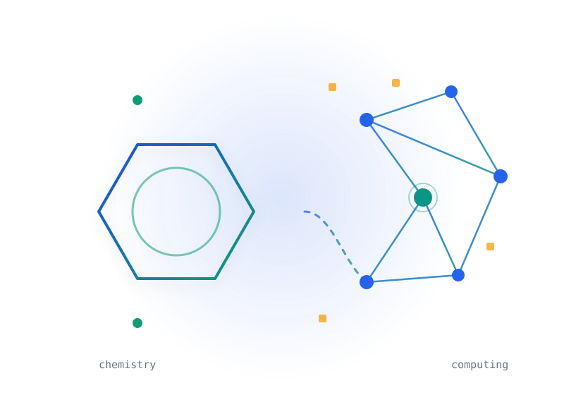
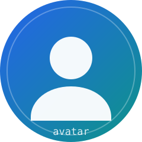

Computer Networks
从 HTTP 请求结构入手，理解一个网页是如何被浏览器取回并渲染出来的。
个人主页
Computer Science · Chemistry · AI for Science
我是一名本科生，计算机和化学两边都在学。这里放的是我正在看的东西、 做过的课程实验，还有一些还没想明白、先记下来的笔记。

01 — About

我是一名本科生，计算机和化学两边都在学。计算机这边主要在补基础， 数据结构、计算机网络、操作系统这些课的内容，课后会写点代码把课本上的东西跑一遍。
化学这边在学物理化学，热力学和量子化学对我来说都还挺吃力。这两个方向看起来离得远， 但交叉的地方是我最感兴趣的：用计算的方法去理解分子和材料的行为， 也就是现在常说的 AI for Science。
我做出来的东西还很少。这个网站是计算机网络课的实验：结构和内容是我定的， 具体的 HTML / CSS / JavaScript 大部分借助 AI 工具完成，我逐段读过、改过， 尽量弄清每一处在做什么。
02 — Learning
从 HTTP 请求结构入手，理解一个网页是如何被浏览器取回并渲染出来的。
从线性回归这类最基础的模型开始自己实现一遍，再往神经网络和泛化问题走。
理解能量、熵与平衡这些基本概念，以及它们背后的数学表述。
关注机器学习方法如何被用在分子性质预测、材料筛选这类真实的科学问题上。
| Course | Topic | Status |
|---|---|---|
| Computer Networks | HTTP / Web Applications | Learning |
| Machine Learning | Regression & Neural Networks | Learning |
| Physical Chemistry | Thermodynamics | Learning |
| AI for Science | Scientific Machine Learning | Exploring |
04 — Blog
打算整理一份从线性回归到神经网络的学习顺序，以及每个阶段值得动手实现的东西。
分子性质预测到底是怎么做的？想把读到的入门材料整理成一篇能看懂的中文笔记。
05 — Links